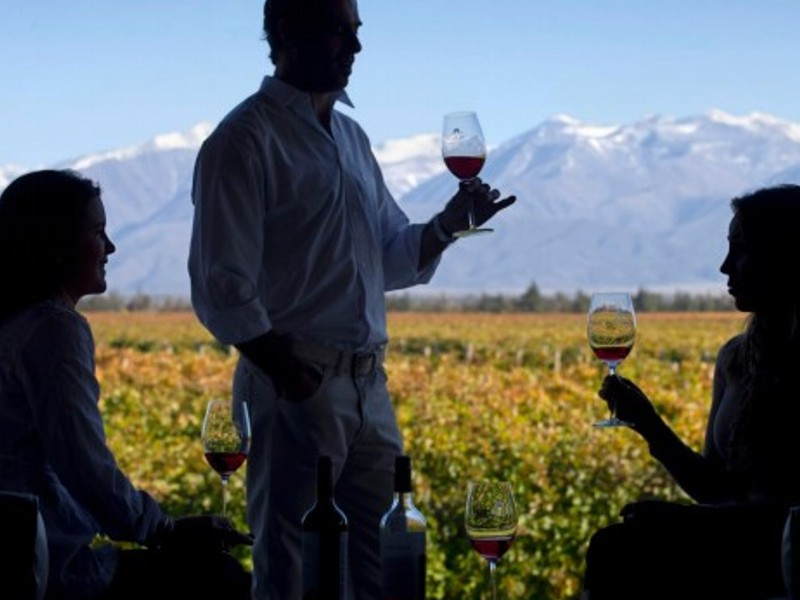
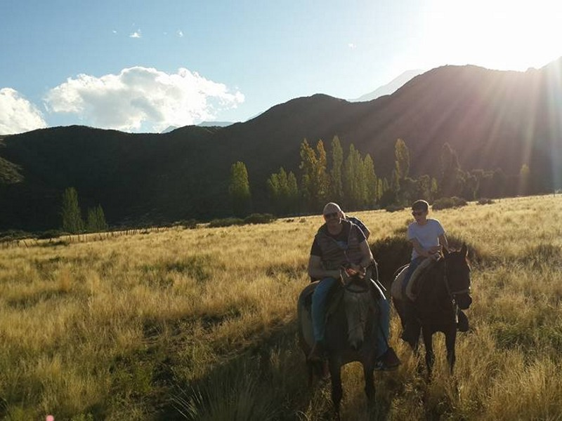

GALERIA
CABALGATAS
POR EL DIA:

Cabalgata y Bodega
Esta cabalgata se realiza por el día en Los Árboles, Tunuyán. Se puede reservar con 24hs de anticipación como mínimo. Se recibe a los turistas con un desayuno y se emprende la cabalgata.Luego de la cabalgata, se visita la bodega Salentein o Ande Luna.

Cabalgata Full Day
Se recibe a los turistas con un desayuno y luego de una breve explicación de la manera de montar y ensillar caballos y se emprende la cabalgata. Pasamos por una viña de Malbec típica de Mendoza y luego subimos un cordón empinado muy entretenido.
DE CORDILLERA:

Cabalgata al Avión de los Uruguayos
Se parte de la Ciudad de Mendoza con 2 destinos opcionales: Alojamiento en Hotel o Alojamiento en campamento de montaña. A la mañana siguiente comienza la travesía a caballo, se cruza el imponente Río Atuel y entramos al Cajón de las Lágrimas hasta finalmente llegar al lugar.

Volcán Overo y Laguna del Atuel
Cabalgata hacia el Volcán Overo y que llega al nacimiento mismo del río Atuel, donde se hace campamento en el ojo de Agua. Al día siguiente se emprende el camino a la Laguna del Atuel, la cual bordeamos y llegamos hasta una hermosa cascada natural reconocida por su incomparable belleza.

Cruce a Chile a través de la Cordillera de Los Andes
Cabalgata de 3 o 4 noches cruzando la Cordillera de Los Andes hasta llegar a Chile. Traslado desde la ciudad de Mendoza hasta Tunuyán, donde se pernocta y revisamos el equipaje para la travesía, ultimamos detalles y cenamos para levantarnos al otro día bien temprano para comenzar la cabalgata.